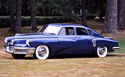
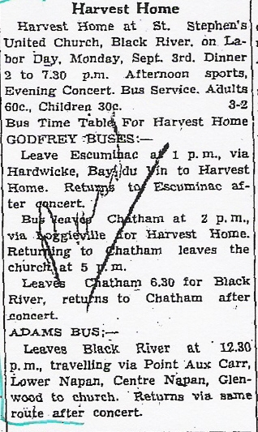
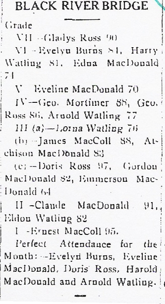
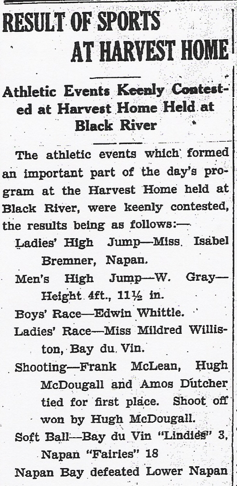

The Family Chronicle
No. 179 November 8, 2009
____________________________________________________________________
The old fashioned way

Recently I was part of a tour of the collection of early agricultural equipment owned by Dr. Roy Montgomery, Birch Hill, PEI. Although of post-war vintage, this Farmall Cub farm tractor required a crank and elbow grease to start.
From a wartime newspaper
The Commercial of September 16, 1943 carried the following:
“Peanut butter, jelly powders and soya bean spreads are not included in the list of rationed sweet spreads such as jams, jellies, molasses and such products. Ration book holders who do not wish to purchase these rationed commodities may use the “D” coupons to buy sugar. Each “D” coupon allows the consumer to buy one-half pound of sugar.”
Who remembers the Tucker?

According to Wikapedia, the Tucker was designed in Michigan and built in Chicago in 1948; only 51 were ever built of which 48 still survive.
Named after Preston Tucker, the car had 3 headlamps, a torpedo like front end and the engine in the rear. It also had a padded dash, seat belts, and pop out windshield. The Tucker used a unibody construction meaning that the body was welded to the frame in order to eliminate body rattles. The frame was shaped like a ship's prow at the front and rear which was supposed to make it stronger. The bumpers were mounted on springs to absorb shock in a crash, and because of the weight balance provided by the rear mounted engine the brakes would wear evenly and the car would lower itself evenly, instead of the front end pitching down, in panic stops. The rims were also designed so that if one of the tires went flat, the car wouldn't pull dramatically to that side.
Tucker designed the steering wheel to spread the force of impact in a collision and the steering column that would break away and not spear the driver.
Thanks to Barry MacKenzie for the following clippings:


